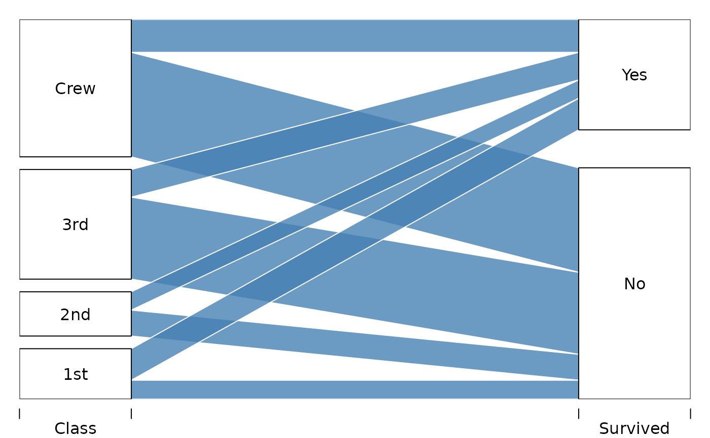
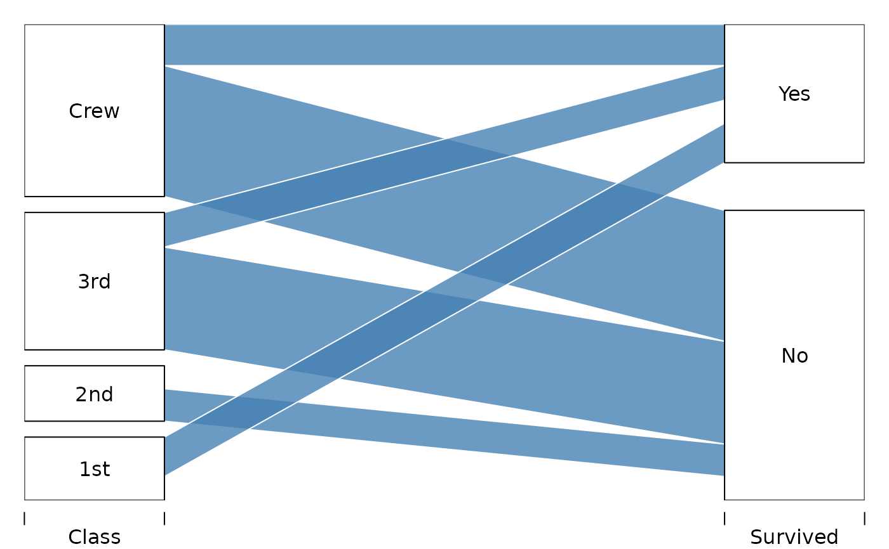
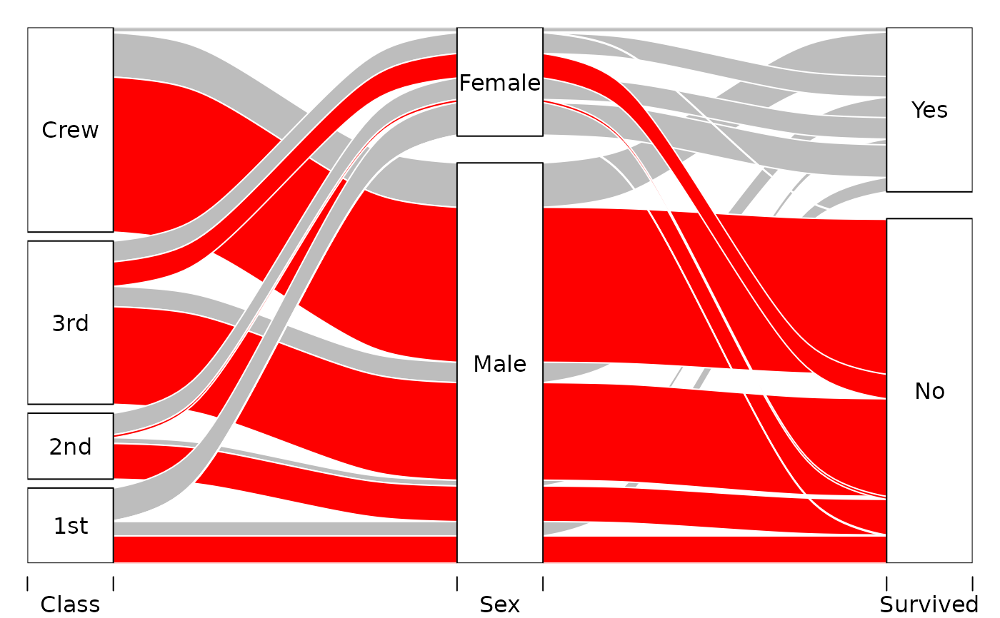
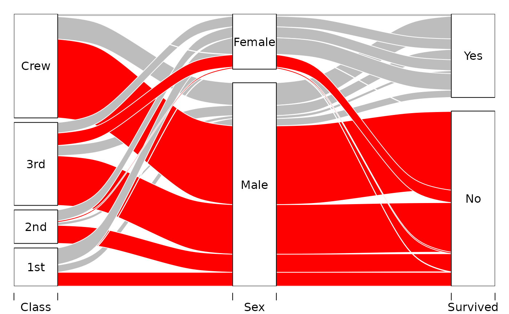
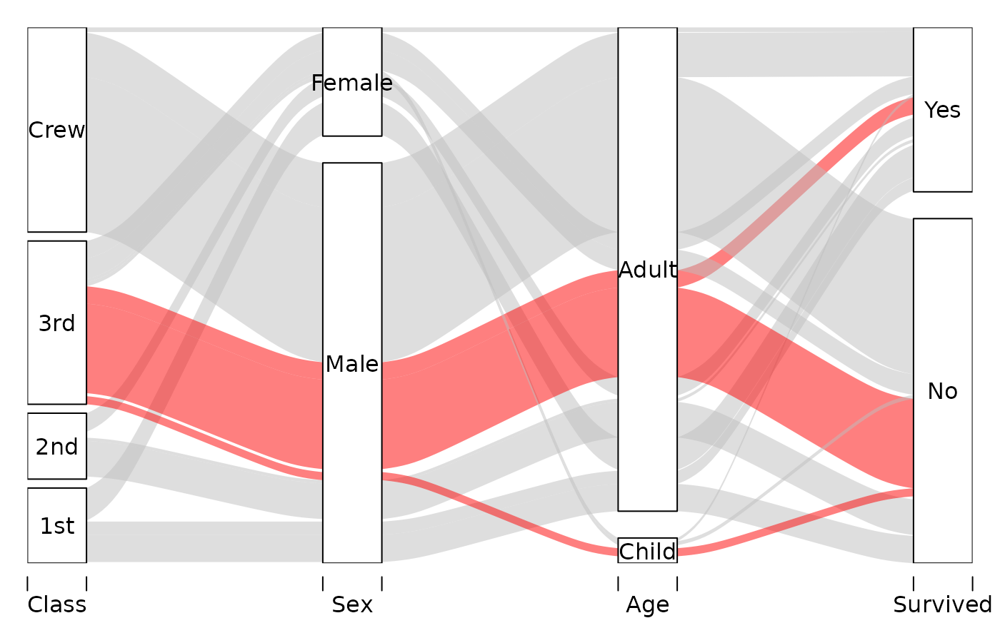
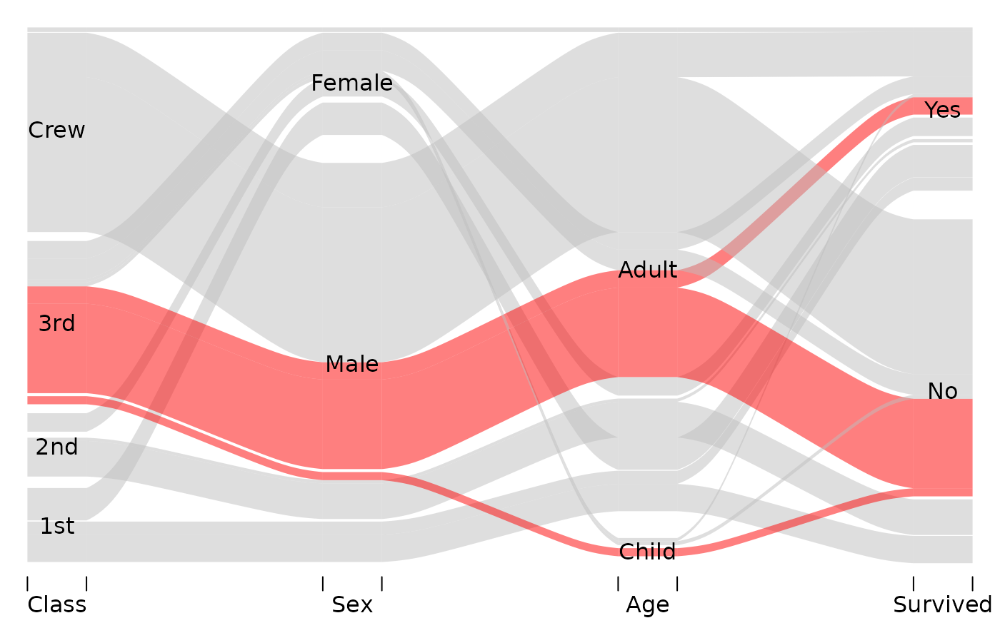
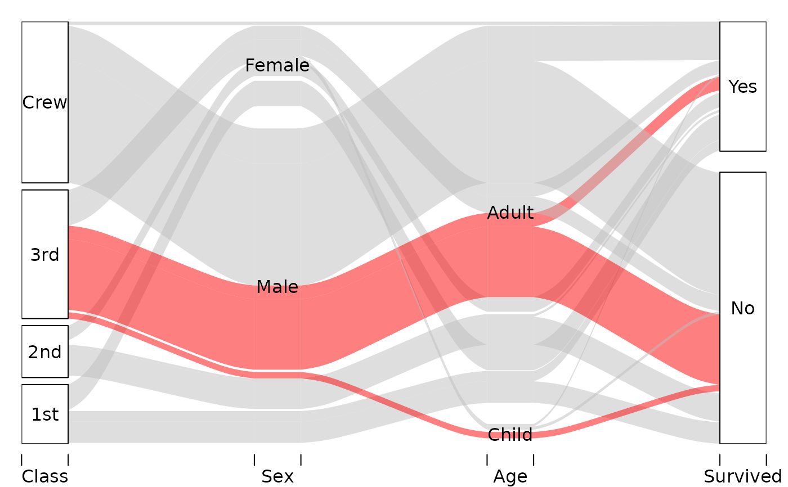

Drawing alluvial diagrams, also known as parallel set plots.
Usage
alluvial(
...,
freq,
col = "gray",
border = 0,
layer,
hide = FALSE,
alpha = 0.5,
gap.width = 0.05,
xw = 0.1,
cw = 0.1,
blocks = TRUE,
ordering = NULL,
axis_labels = NULL,
mar = c(2, 1, 1, 1),
cex = par("cex"),
xlim_offset = c(0, 0),
ylim_offset = c(0, 0),
cex.axis = par("cex.axis"),
axes = TRUE,
ann = TRUE,
title = NULL
)Arguments
- ...
vectors or data frames, all for the same number of observations
- freq
numeric, vector of frequencies of the same length as the number of observations
- col
vector of colors of the stripes
- border
vector of border colors for the stripes
- layer
numeric, order of drawing of the stripes
- hide
logical, should particular stripe be plotted
- alpha
numeric, vector of transparency of the stripes
- gap.width
numeric, relative width of inter-category gaps
- xw
numeric, the distance from the set axis to the control points of the xspline
- cw
numeric, width of the category axis
- blocks
logical, whether to use blocks to tie the flows together at each category, versus contiguous ribbons (also admits character value "bookends")
- ordering
list of numeric vectors allowing to reorder the alluvia on each axis separately, see Examples
- axis_labels
character, labels of the axes, defaults to variable names in the data
- mar
numeric, plot margins as in
par- cex, cex.axis
numeric, scaling of fonts of category labels and axis labels respectively. See
par.- xlim_offset, ylim_offset
numeric vectors of length 2, passed to
xlimandylimofplot, and allow for adjusting the limits of the plotting region- axes
logical, whether to draw axes, defaults to TRUE
- ann
logical, whether to draw annotations: category labels. Defaults to TRUE
- title
character, plot title
Value
Invisibly a list with elements:
endpointsA data frame with data on locations of the stripes with columns:
...Vectors/data frames supplied to
alluvialthrough...that define the axes.bottom,.topY locations of bottom and top coordinates respectively at which the stripes originate from the axis
.axis.axisAxis number counting from the left
category_midpointsList of vectors of Y locations of category block midpoints.
alluvium_midpointsA data frame with location of midpoints on each alluvium segement with columns:
...Vectors/data frames supplied to
alluvialthrough the....axis_from,.axis_toIDs of axes that a segment originates from and goes to
.x,.yX and Y locations of the alluvium midpoints
.slopeThe (approximate) slope of the alluvium at the midpoint
Examples
# Titanic data
tit <- as.data.frame(Titanic)
# 2d
tit2d <- aggregate( Freq ~ Class + Survived, data=tit, sum)
alluvial( tit2d[,1:2], freq=tit2d$Freq, xw=0.0, alpha=0.8,
gap.width=0.1, col= "steelblue", border="white",
layer = tit2d$Survived != "Yes" )

alluvial( tit2d[,1:2], freq=tit2d$Freq,
hide=tit2d$Freq < 150,
xw=0.0, alpha=0.8,
gap.width=0.1, col= "steelblue", border="white",
layer = tit2d$Survived != "Yes" )

# 3d
tit3d <- aggregate( Freq ~ Class + Sex + Survived, data=tit, sum)
alluvial(tit3d[,1:3], freq=tit3d$Freq, alpha=1, xw=0.2,
col=ifelse( tit3d$Survived == "No", "red", "gray"),
layer = tit3d$Sex != "Female",
border="white")

# 4d
alluvial( tit[,1:4], freq=tit$Freq, border=NA,
hide = tit$Freq < quantile(tit$Freq, .50),
col=ifelse( tit$Class == "3rd" & tit$Sex == "Male", "red", "gray") )
 # 3d example with custom ordering
# Reorder "Sex" axis according to survival status
ord <- list(NULL, with(tit3d, order(Sex, Survived)), NULL)
alluvial(tit3d[,1:3], freq=tit3d$Freq, alpha=1, xw=0.2,
col=ifelse( tit3d$Survived == "No", "red", "gray"),
layer = tit3d$Sex != "Female",
border="white", ordering=ord)
# 3d example with custom ordering
# Reorder "Sex" axis according to survival status
ord <- list(NULL, with(tit3d, order(Sex, Survived)), NULL)
alluvial(tit3d[,1:3], freq=tit3d$Freq, alpha=1, xw=0.2,
col=ifelse( tit3d$Survived == "No", "red", "gray"),
layer = tit3d$Sex != "Female",
border="white", ordering=ord)

# Possible blocks options
for (blocks in c(TRUE, FALSE, "bookends")) {
# Elaborate alluvial diagram from main examples file
alluvial( tit[, 1:4], freq = tit$Freq, border = NA,
hide = tit$Freq < quantile(tit$Freq, .50),
col = ifelse( tit$Class == "3rd" & tit$Sex == "Male",
"red", "gray" ),
blocks = blocks )
}



# Data returned
x <- alluvial( tit2d[,1:2], freq=tit2d$Freq, xw=0.0, alpha=0.8,
gap.width=0.1, col= "steelblue", border="white",
layer = tit2d$Survived != "Yes" )
points( rep(1, 16), x$endpoints[[1]], col="green")
points( rep(2, 16), x$endpoints[[2]], col="blue")